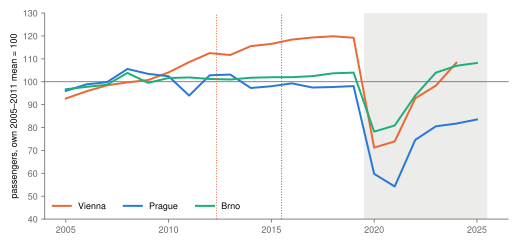
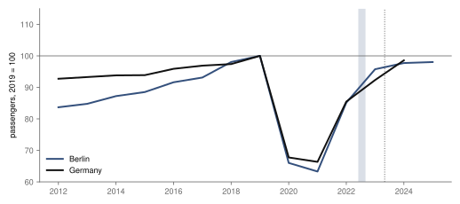
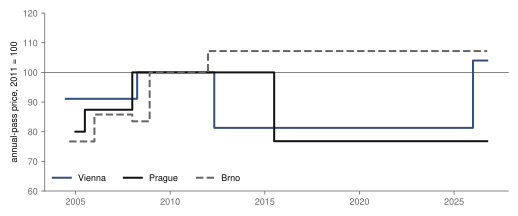

Note · transit · annual passes in Vienna, Prague and Brno, 2005–2025
Did a cheaper annual pass fill Vienna's and Prague's trams?
Vienna cut its annual pass in 2012 and Prague in 2015. The published passenger counts cannot say what the cuts did: too few cities count passengers the same way every year, most of the region cut prices too, and Prague changed how it counts a year before its cut. This note shows the series and why they cannot carry an estimate.
- annual-pass cut
- −19 % · −23 % Vienna 1 May 2012, €449 → €365 · Prague 1 July 2015, CZK 4 750 → 3 650 · tariff documents
- Vienna, passengers a year
- +2.7 % → +0.8 % average yearly change, 2005–2011 → 2012–2019 · administrative count
- Prague, passengers a year
- −0.4 % → 0.0 % 2005–2011 → 2015–2019; counting method changes in 2014 · operator estimate
- cities with a clean series
- 3 of 17 screened before any count was read: Vienna, Prague, Brno · too few for a comparison
Overwhelmed? Here's the short version
- Vienna's €365 annual pass is often credited with filling its trams. Its passenger count was already rising before the 2012 cut, by 2.7 % a year, and rose more slowly after it, by 0.8 % a year.
- Prague's count is flat around its 2015 cut, but Prague switched from ticket sales to surveys in 2014, so its before and after are not measured the same way.
- A fair comparison needs similar cities without a cut. Of 17 candidates, only Brno counts the same way every year and kept its price; one control is not enough.
- Berlin and Germany fell by about a third in 2020–2021 and were back near their 2019 level by 2024–2025, in the years of the 9-euro ticket and the Deutschlandticket; with COVID in the same years, the tickets' share cannot be separated.
- Nothing here is an effect. The series are shown so the question stays open honestly.
Photo: Peter Gugerell · CC0, toned

In May 2012 Vienna cut its annual pass from €449 to €365, a euro a day, and the "Vienna model" became a reference for cities that want more people on trams. In July 2015 Prague cut its annual coupon from CZK 4 750 to CZK 3 650 (fig. 3). Brno, the third city here, raised its pass in 2012 and has kept it since.
The plan was to compare each cut with similar cities that did not cut. That needs cities that count passengers the same way every year and kept their price. A screen of 17 candidates, done before any count was read, found three: Vienna, Prague and Brno1. Most other cities in the region either cut their own pass between 2012 and 2020, changed their network, or publish no series for the whole window. With one control city the comparison cannot be made, so this note only describes.
Vienna, Prague and Brno
Each series is set to 100 at its own 2005–2011 average, because the cities count differently and their levels cannot be compared (fig. 1).
Vienna's journeys were already rising before its 2012 cut; Prague's stayed flat, across a change in how it counts.

Vienna's count rose from 747 million journeys in 2005 to 875 million in 2011, by 2.7 % a year, and kept rising after the cut, more slowly: 0.8 % a year from 2012 to 2019, to 961 million. Whatever the cut did, the growth often credited to it had started earlier.
Prague's count is flat: −0.4 % a year before 2012 and 0.0 % a year from 2015 to 2019. Two of its steps are not passengers but bookkeeping. The 2011 figure is 8 % lower partly because of a buy-back of tickets already sold, and in 2014 DPP replaced ticket-sales estimates with transport surveys, a year before the cut; the count fell 5.7 % that year. Prague's before and after the cut are therefore measured differently. Brno grew slowly throughout, by 0.9 % a year to 2011 and 0.4 % a year from 2012 to 2019.
All three fell in 2020. Against 2019, Vienna was 9 % lower in 2024 and Brno 4 % higher in 2025. Prague's 2025 figure is 15 % lower, but Prague switched to automatic passenger counting in 2020, so that gap is not like for like either.
Berlin and Germany
Germany ran two nationwide experiments: the 9-euro ticket in June–August 2022 and the Deutschlandticket from May 2023, at €49 a month, later €58 and €63. Berlin also sold a €29 monthly subscription in 2022–2023 and again from 2024 (fig. 2).
Berlin and Germany lost about a third of their journeys in the pandemic and were back near 2019 by 2024–2025, with the cheap tickets arriving mid-recovery.

Both fell to about two thirds of 2019 in 2020–2021 and recovered after the cheap tickets, Berlin to 2 % below 2019 in 2025 and Germany to 1 % below in 2024. Since the tickets were nationwide and arrived with the end of the pandemic, no German city is left as a comparison, and the recovery cannot be divided between them.
Breaks in the series
Every known change in how the counts were made, from the sources' own notes:
| series | year | what changed |
|---|---|---|
| Prague | 2005 | counting method changed (2006 report); six bus lines handed to another operator in November |
| Prague | 2010 | split by mode identical to 2009, so shares rather than counts; total used |
| Prague | 2011 | lower partly because of a buy-back of tickets already sold (report p. 35) |
| Prague | 2014 | ticket-sales estimates replaced by transport surveys, a year before the cut |
| Prague | 2020 | surveys replaced by automatic passenger counting |
| Vienna | 2012 | split by mode moves from seat-kilometres to counts; the total, used here, has no stated break |
| Brno | 2005–2022 | counts calculated from tickets sold; 2005 revised from 327.9 to 336.6 million (regional tickets); boats included from 2010; small revisions in 2016, 2017, 2020 and 2022; latest report used |
| Germany, Berlin | 2016, 2019, 2021 | Destatis redrew the set of reporting firms in 2016 and 2021; 2019 revised from 11 459 to 11 704 million after a full census; 2020–2022 preliminary; Berlin's office and Destatis differ slightly in 2019 and 2024 |
| Germany | 2025 | not published in the database open to guests; a preliminary press figure of about 11.3 billion is not used |
The screen that admitted Prague found no documented change of method in 2005–20191; reading the reports year by year found the 2014 switch. Under the screen's own rule Prague would have been excluded too, which leaves the comparison even further from possible.
Vienna cut its pass by a fifth in 2012 and Prague by almost a quarter in 2015; Brno's went up.

What this will not show
It does not show whether a cheaper pass raises ridership, in Vienna, Prague or anywhere: the lines bundle price with network growth, population, fuel prices and, for Prague, a change of method. It does not show who rides more, since the counts are journeys, not people. It does not compare levels between cities. In Vienna the pass went to €467 in January 2026, and the next years of counts will show what happens after a rise.
References
- Šandová, B. (2026). Annual-pass study: research design, donor screening and panel units. annual-pass-design.md, annual-pass-donors.md, annual-pass-panel-units.md. bsandova.com repository. Accessed 6 October 2026.
- Stadt Wien (2025). Fahrgastzahlen der Wiener Linien, 1995–2024 (fahrgaeste2024.csv), and MA 23, Statistik Wien, tables 3.2.1–3.2.3 (U-Bahn, Straßenbahn, Autobus). Open government data. Accessed 6 October 2026.
- Dopravní podnik hl. m. Prahy (2006–2026). Výroční zprávy 2005–2025. dpp.cz. Accessed 6 October 2026.
- Dopravní podnik města Brna (2006–2026). Výroční zprávy 2005–2025. dpmb.cz. Accessed 6 October 2026.
- Amt für Statistik Berlin-Brandenburg (2026). Personenverkehr mit Bussen und Bahnen, Zeitreihe 2025, Berlin. statistik-berlin-brandenburg.de. Accessed 6 October 2026.
- Statistisches Bundesamt (2023, 2025). Fachserie 8 Reihe 1.1, 4. Vierteljahr 2022, and Statistischer Bericht Personenverkehr mit Bussen und Bahnen 2024. destatis.de. Accessed 6 October 2026.
- Wiener Linien, BVG and VBB tariff pages (Internet Archive, 2004–2026); PID tariffs 2018–2026, pid.cz; IDS JMK and DPMB price lists 2004–2026, dpmb.cz. Every page in prices.csv. Accessed 6 October 2026.
Change log
- 6 October 2026: figures redrawn with a takeaway line, notes at the key points, labels at line ends and one colour per city; no number changed.
- 6 October 2026, version 1: first published, as a descriptive note after both registered designs were found not estimable.
- Checked against editorial standard v1 on 6 October 2026.